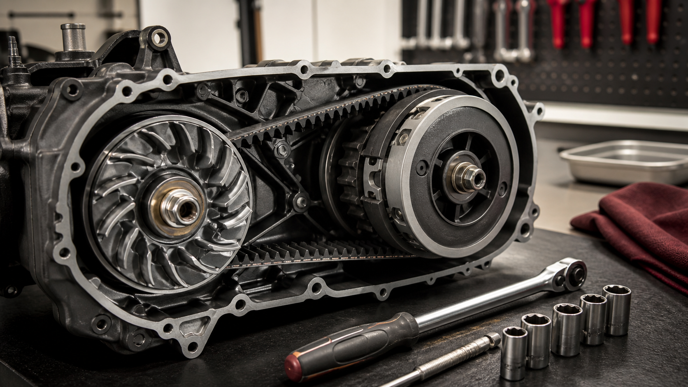

КВАДРОЦИКЛЫ · 09
Вариатор квадроцикла: когда нужен сервис
Вариатор чувствителен к перегреву, воде и износу ремня. Профилактика помогает избежать обрыва в поездке.

Признаки внимания
- Рывки при начале движения, запах горелого ремня или нестабильные обороты.
- Шум, который меняется при наборе скорости, и заметная потеря тяги.
- Следы воды или грязи в корпусе вариатора после брода.
Что не стоит откладывать
Не продолжайте движение с явными симптомами: осколки ремня могут повредить шкивы и корпус. Нужна диагностика причины, а не только замена детали.
Что проверяет сервис
Вариатор диагностируют комплексно: ремень, шкивы, ролики, вентиляцию и герметичность корпуса. Новая деталь не устранит перегрев, если причина в грязном воздухозаборнике или воде внутри.
Чего не делать
- Не ехать с запахом горелого ремня.
- Не сушить узел агрессивным нагревом.
- Не игнорировать воду после брода.
Полезно после проверки
После поездок по воде и глубокой грязи проверяйте узел вне очереди, не дожидаясь планового ТО. Для вариатора профилактика особенно ценна: повреждения быстро становятся дорогими.